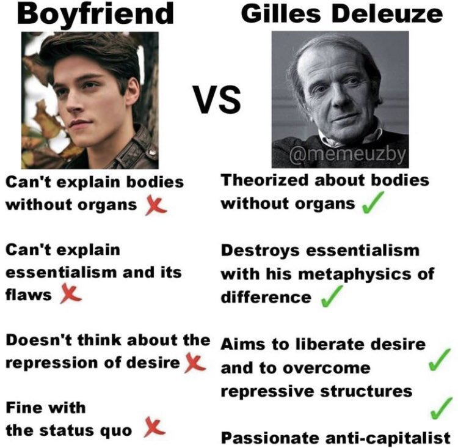

nønpolar
@nonpolar10
Deleulu X Guatata ❤️ （x）
暂且抛开对德勒兹理论的探讨（意见）
人们，至少在中文互联网似乎总是习惯于忽视瓜塔里在他们理论形成中的贡献——虽然我想确实可能主要是德勒兹完成了那种系统性的综合，但很多关键术语都是这个非科班哲学家瓜塔里贡献的。
远嫁他乡的妻子和……（你们想嗑的可以开始了

philosophy memes 🔗
@philosophymeme0
https://t.co/YonlhsqQ1O